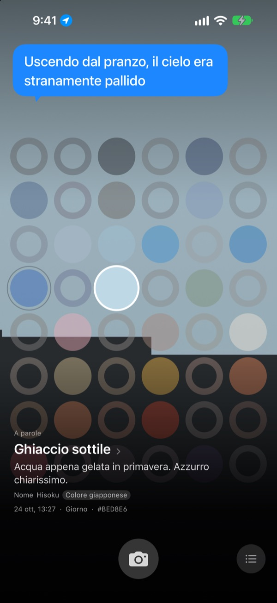
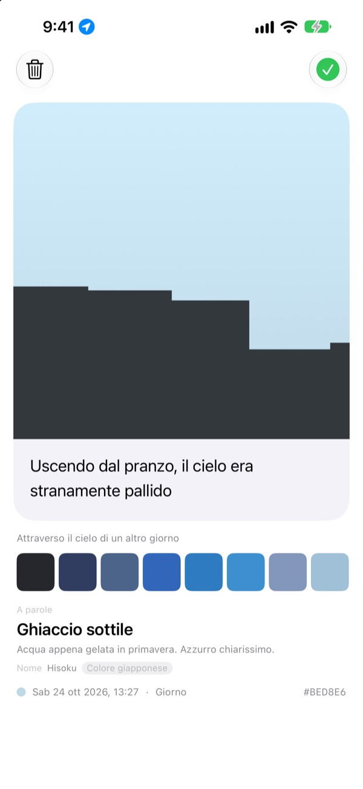
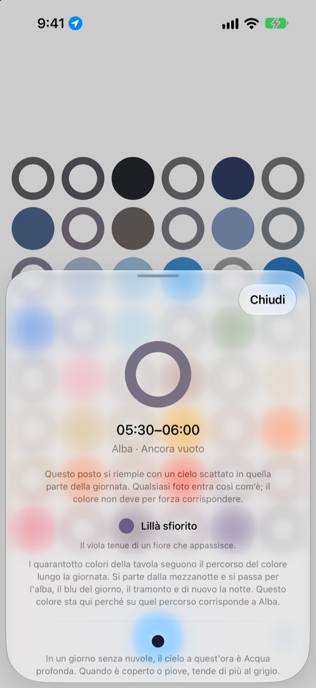
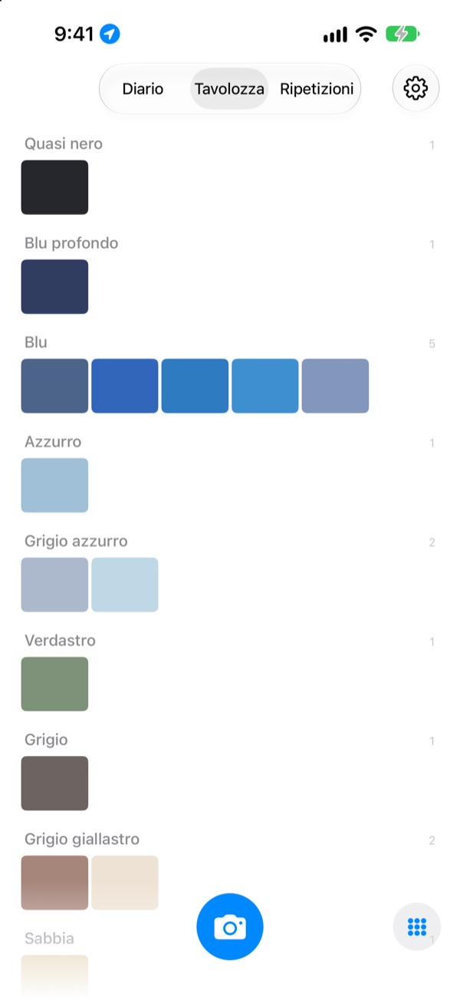

Di che colore era
il cielo oggi?
Fotografa il cielo e, su un tabellone di quarantotto caselle, quella dell’ora si riempie del colore che hai colto. Riceve anche un nome che si vede subito, come Ghiaccio sottile, Piastrella di piscina o Caco maturo.
Gratis. Niente account, niente accesso.

Prova il tabellone
Tocca una casella per vedere a quale momento della giornata appartiene. Aggiungi una foto del cielo per riempire la casella di adesso, poi fai scorrere i giorni e guarda come cambia il tabellone.
Guardi il cielo ogni giorno, ma non ricordi nessun colore
Il cielo sulla strada per il lavoro, quello all’uscita dopo pranzo: la sera non sai più di che colore fossero. Le foto del cielo che hai scattato si perdono tra tutte le altre del rullino. SkyDex le raccoglie come colori e mostra su un solo tabellone il percorso del cielo di oggi.
Ogni cielo riceve un nome
Ogni colore riceve prima un nome che si vede a occhi chiusi, come Ghiaccio sottile, Piastrella di piscina o Caco maturo. Sotto arriva un nome con una provenienza: un colore tradizionale coreano o giapponese, un pigmento o un colore web.
Se la corrispondenza è stretta c’è scritto Nome, altrimenti, con onestà, Il nome più vicino.

Lascia una riga
Appena scatti si apre una scheda. Scrivi cosa ti passava per la testa guardando in alto: tornerà a galleggiare sopra il cielo ogni volta che tocchi quella casella sul tabellone.
Puoi anche stendere su questa foto il colore del cielo di un altro giorno e condividere il risultato come immagine.

Le caselle vuote indicano la strada
Tocca una casella vuota per sapere a quale momento della giornata corrisponde e quale colore cercare. Ti dice anche com’è il cielo a quell’ora in una giornata senza nuvole, regolato sull’alba e sul tramonto del posto in cui sei.
Il colore non deve per forza coincidere. Anche il grigio di una giornata coperta è il colore del cielo di quel giorno.

Diario, tavolozza, ripetizioni
Sfoglia i tuoi cieli in ordine e raccogli i colori in tavolozze per famiglie, come blu, grigio e sabbia. Fotografa la stessa ora in un altro giorno e i due cieli stanno fianco a fianco.
I widget della schermata Home mostrano a colpo d’occhio il tabellone di oggi e il cielo di oggi.

Per iniziare bastano tre passi
- 1
Alza gli occhi
Tocca il pulsante della fotocamera sotto il tabellone e lascia che il cielo riempia il quadrato.
- 2
Una casella si riempie
La casella dell’ora prende il colore che hai colto, e un nome.
- 3
Lascia una riga
Sulla scheda che si apre, scrivi cosa pensavi guardando quel cielo.
Come il tabellone divide la giornata
- Mezzanotte · 00:00–05:00
- sei caselle
- Alba · 05:00–08:00
- sei caselle
- Giorno · 08:00–16:00
- dodici caselle
- Tardo pomeriggio · 16:00–18:00
- sei caselle
- Tramonto · 18:00–21:00
- dodici caselle, una ogni 15 minuti
- Notte · 21:00–24:00
- sei caselle
Intorno al tramonto, quando il cielo cambia in fretta, le caselle sono fitte; nel cuore della notte, quando resta a lungo uguale, sono larghe. In alto c’è la mezzanotte, e scendendo la giornata scorre.
Domande frequenti
Come si riempie una casella?
Un cielo che fotografi oggi riempie la casella dell’ora dello scatto, anche se il colore non è quello che ti aspettavi: a quell’ora il cielo era davvero così. I cieli dei giorni passati entrano per colore: se uno è abbastanza vicino al colore di una casella la riempie, e ogni cielo riempie una sola casella.
Una casella piena ieri oggi è vuota.
Il tabellone è sempre oggi. Una casella che un cielo di ieri riempiva grazie all’orario, con il nuovo giorno viene riabbinata solo per colore. Per questo certi giorni il tabellone è quasi pieno e altri sembra vuoto. Le tue foto non sono sparite: tutti i cieli sono nel Diario e, in ordine di colore, nella Tavolozza.
Le caselle piene stanno sbiadendo.
È voluto. Una foto conserva il suo vero colore per una settimana, poi sbiadisce piano nelle otto settimane successive. Non viene cancellata e non scompare mai del tutto. Fotografa di nuovo il cielo a quell’ora e la casella torna subito al suo colore pieno. Nessuna serie da non interrompere, nessun punteggio da recuperare.
Il colore deve coincidere?
No. Non c’è promosso o bocciato. Ogni foto viene salvata, e anche il grigio di una giornata coperta è il colore del cielo di quel giorno.
Perché chiede la mia posizione?
Solo per mostrarti, quando tocchi una casella vuota, il colore di un cielo senza nuvole a quell’ora, regolato sul sorgere e sul calare del sole nel posto in cui sei. Usa una posizione approssimativa, al chilometro, e le coordinate non vengono mai allegate alle foto. Se rifiuti, tutto funziona lo stesso, con Seul come riferimento.
Posso aggiungere un cielo dalla mia libreria?
Sì. Anche un cielo scelto da Foto invece che con la fotocamera viene ritagliato in quadrato e riempie la casella di adesso, come uno scattato al momento.
Come elimino una foto?
Apri la foto e tocca Elimina, oppure scorri verso sinistra nel Diario. Viene rimossa insieme dal dispositivo e da iCloud. Se elimini l’app la copia su iCloud resta, e reinstallandola i tuoi cieli tornano.
Cosa succede se cambio dispositivo?
I tuoi cieli sono salvati nel tuo iCloud e ti seguono su un nuovo dispositivo con lo stesso Account Apple. Non c’è nessun account né server, e foto e colori non vengono mai inviati allo sviluppatore. Niente pubblicità, niente tracciamento.
È davvero gratis?
Sì, tutte le funzioni sono gratuite. Se ti piace puoi lasciare una mancia allo sviluppatore dall’app, ma la mancia non sblocca nulla.
Su quali dispositivi funziona?
Su iPhone con iOS 17.0 o versioni successive, solo in verticale.
Bug, comportamenti strani o qualcosa che vuoi dire: scrivi a leeo@kakao.com. Se racconti cosa stavi facendo e quale versione di iOS usi, il problema si trova molto più in fretta.